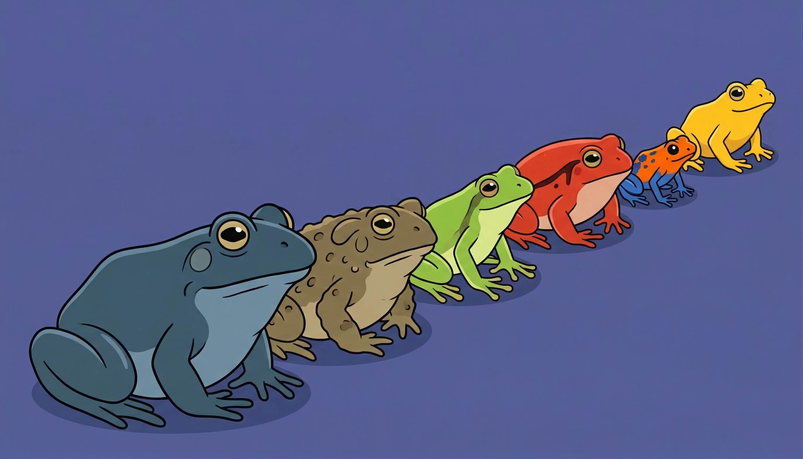

Stop making unit mistakes!
Let the computer track your units so you don't have to
by Ada Homolova · March 31, 2026

You're reading a government report. Carbon budget is in gigatons of CO₂. The factory data is in megatons. Your source gave you numbers in kilogrammes. And now you're doing math in a spreadsheet, shifting decimal points, hoping you didn't just accidentally multiply something by a thousand.
This is a problem Thomas Goorden pointed to in our latest Pondcast. Thomas is an investigative journalist with a physics background who covers environmental topics. Calculations where unit mistakes are a real danger are a vital part of his journalistic practice.
And they are too easy to make. How many zeros between a gigaton and a megaton? If you have to think about it, it's a problem.
Let the computer do the work
On September 23 1999, after almost 10 months of travel to Mars, the $125 million Mars Climate Orbiter burned and broke into pieces, because two teams working on the navigation were working in different unit systems. But these mistakes are preventable if we integrate units into the scripts.
Thomas uses Julia (a programming language built by mathematicians) with a library called Unitful. The idea is simple: instead of just typing a number, you attach the unit to it.
When you then do math with those numbers, the library handles the conversions automatically. Mix kilogrammes with grammes? It sorts it out. Multiply gigatons by a factor that's in tonnes? No problem.
As Thomas put it: "I don't think about how many zeros. I write gigaton and megaton, look at what the calculation gives me, and trust the computer, because I told it what the units are."
You can do this for any physical substance
In our latest Pondcast, Thomas focused on how to calculate carbon emissions from any fuel or plastic. However, this advice is pretty universal. You can use it in your PFAS research, energy or water usage calculations.
If you're asking "how big is this compared to that?" or "does this number make sense?", attaching units to your calculations is the single best way to stop yourself from making an embarrassing mistake.
Try it yourself
Thomas shared his full Julia notebook on GitHub. You don't need to know Julia to follow along!
And even if you never touch Julia, the takeaway is this: if you're doing any kind of calculation with physical quantities use a unit library.
Python has one too (called pint) and R as well (called units) According to Thomas, it's all functionally equivalent, but he prefers the readability of Julia and points to some other amazing tricks you can pull off in Julia, like combining it with the 'Handcalcs' and/or 'IntervalArithmetic' libraries.
🦋 For more, follow Thomas on Bluesky